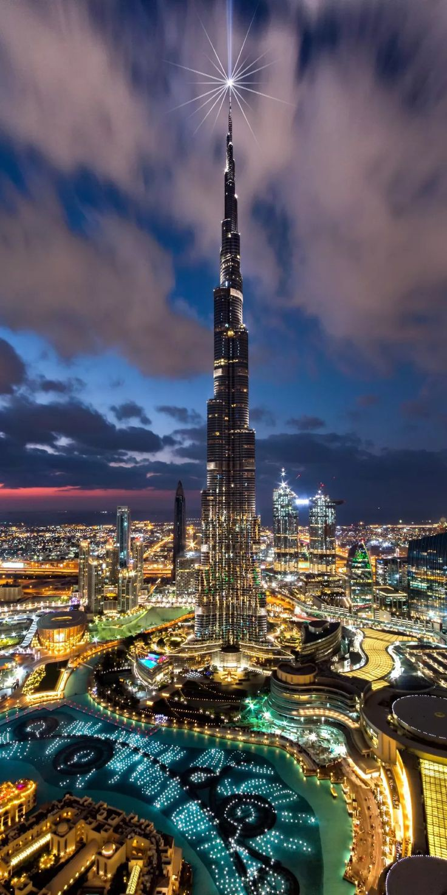
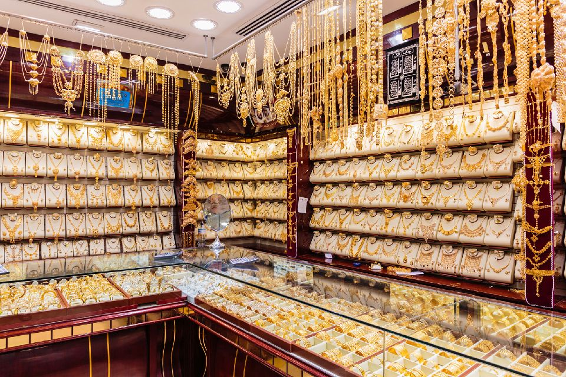
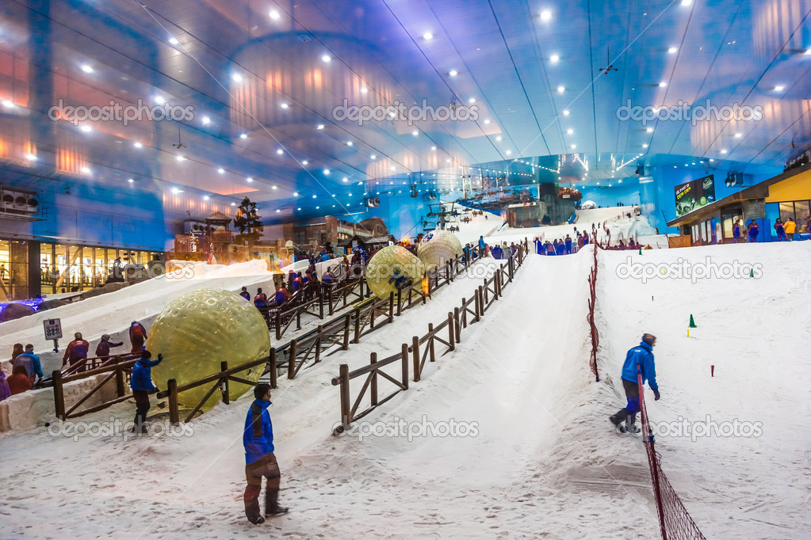
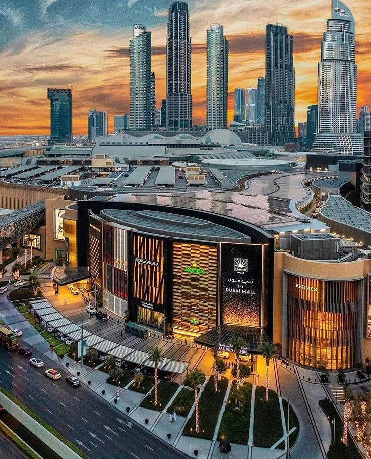
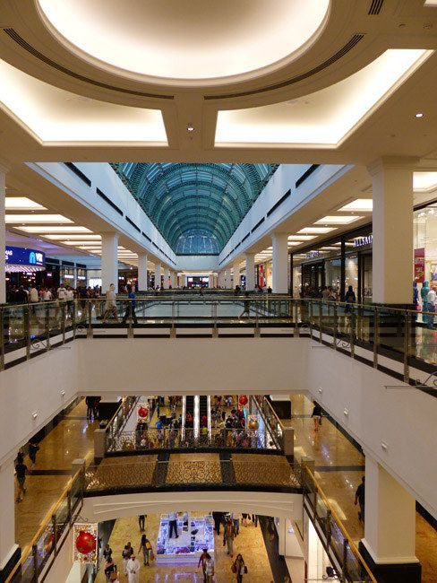
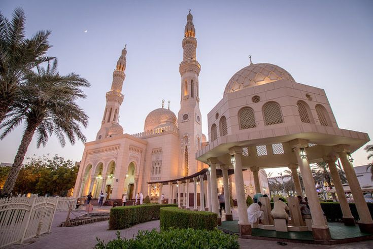
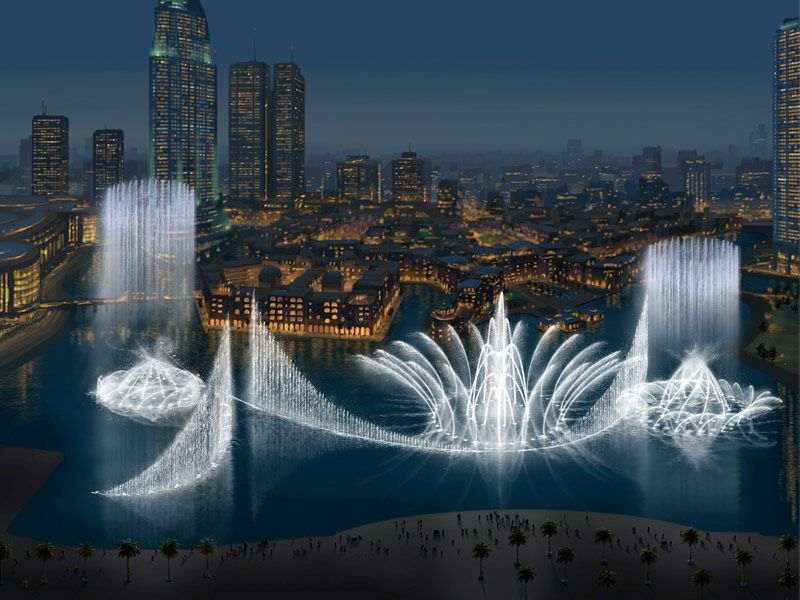
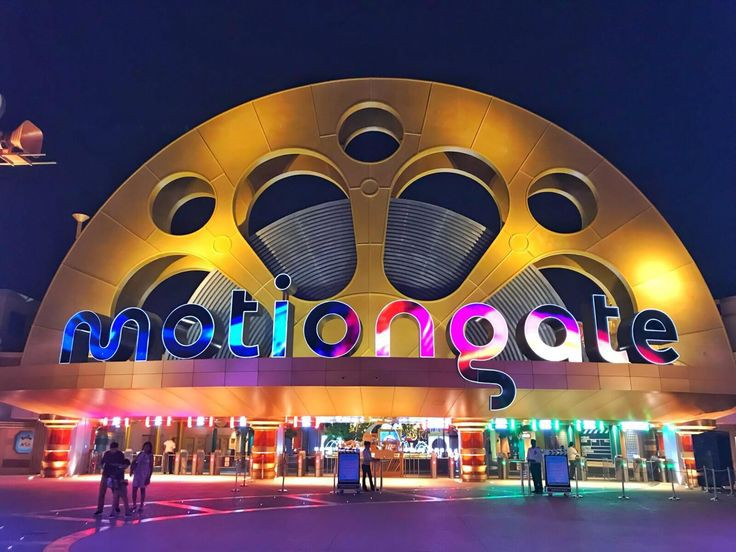

DUBAI
Dubaï. La seule évocation de ce nom suffit à nous indiquer ce à quoi on peut s’attendre :
une oasis d’hôtels haut de gamme, des restaurants de renommée mondiale et des attractions franchement
bizarres, tout cela au milieu du désert. Dubaï n’est pas une ville pour se reposer sur ses lauriers,
la locomotive émiratie allant constamment vers l’avant (et vers le ciel), il y a toujours quelque chose
de nouveau à voir.>
le Burj Khalifa
En symbole des plateformes d’observation, Burj Khalifa héberge à son 124ème
étage « At The Top » : un point de vue spectaculaire, très prisé par les visiteurs. Véritable prouesse
d’ingénierie,
cette tour qui donne l’impression de percer le ciel a été élue plus haut bâtiment du monde avec
828 mètres de hauteur.

Marché de l’Or

Au delà des hôtels, boutiques et attractions démesurés, la ville héberge le
plus grand marché d’Or au monde !
profitez de votre balade pour découvrir ce lieu unique et surtout authentique où passionnés, curieux,
locaux et touristes marchandent l’opulence avec une marchandise oscillant entre 18 et 22 carats.
la station de Ski
Oui, vous avez bien lu : il est possible de skier à Dubaï en plein désert.
Pour cela, il faut se rendre à Ski Dubaï, une station de ski couverte dans un dôme de 4000m² située à
l’intérieur du vaste centre commercial Mall of the Emirates.
Hébergeant 5 pistes aux différentes inclinaisons, Ski Dubaï dispose notamment de sa propre école de ski

Dubai Mall

Symbole phare de la ville, le centre commercial n’est autre que
le centre le plus grand du monde.
Et pour cause, il héberge pas moins de d’une dizaine de centre commerciaux dans ses 1 million de m²
, soit 1200 boutiques ! Parmi les incontournables et outre ses magasins luxueux, on retrouve le plus
grand aquarium du monde.
La mosquée de Jumeirah
Les non-musulmans sont rarement autorisés à voir l’intérieur d’une mosquée,
mais à la mosquée de Jumeirah, le projet « Open Doors. Open Minds » (portes ouvertes, esprits ouverts)
vous permet de la visiter.
L’idéal est de se joindre à une visite guidée car vous pourrez non seulement découvrir le vaste intérieur
de cette merveille architecturale de style fatimide,

La Fontaine de Dubaï

La fontaine de Dubaï est en fait un ensemble de fontaines qui se trouvent
dans le lac du Burj Khalifa. Ce sont les plus grandes fontaines dansantes sur la planète, mesurant 275
mètres de long et projetant de l’eau à 275 mètres de hauteur (150 mètres auparavant).
Il y a des spectacles tous les jours en début d’après-midi et toutes les 30 minutes de 18h à 22h mais
également des promenades en bateau sur le lac depuis lesquelles vous pourrez admirer le show des
fameuses fontaines !
le Motiongate Dubaï
Pour ravir petits et grands, Dubaï détient évidemment sont lot
de parcs de loisirs et autres activités pleines de sensations fortes tels que le Motiongate Dubai.
le parc d’attraction vous plonge dans les coulisses du grand écran à travers 27 manèges et 15
expériences multimédia!
